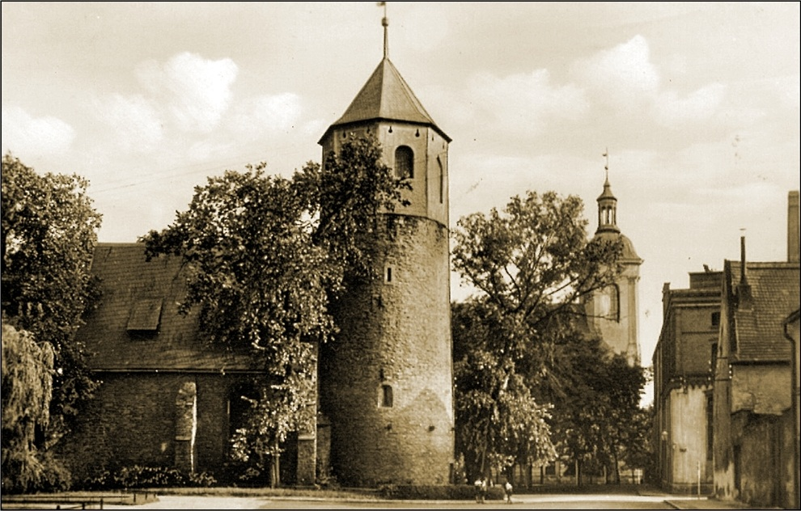

Poka¿ na mapie
Poka¿ na mapie

Rotunda ¦wiêtego Gotarda
Jedna z najstarszych budowli na ¦l±sku powsta³a
w po³. XIIw. jako romañska rotunda - zabytek klasy I.
Wymieniana w ¼ród³ach z 1233 i 1300r. Przebudowana
w XIV i XVIw. w stylu gotyckim powsta³y wtedy dwie nawy
z dwuspadowym dachem. W czasach reformacji pe³ni³a
funkcjê oewi±tyni ewangelickiej. W latach. 1689 - 1708
znalaz³a siê w rêkach augustianów przyby³ych z Wiednia,
pó¼niej znów nale¿a³a do protestantów. A¿ do wybuchu
II wojny ¶wiatowej odbywa³y siê tutaj nabo¿eñstwa
w jêzyku polskim dlatego oewi±tynia nazywana by³a
"polnische Kirche". Po II wojnie oewiatowej ko¶ció³ nie by³ u¿ywany. W 1992r. budynek przejê³a Parafia p.w. Podwy¿szenia Krzy¿a ¦wiêtego. Najstarsz±
czê¶ci± ¶wi±tyni zachowan± do dzisiaj jest dolna czê¶æ wie¿y (do wysokooeci 6,5 m) z portalem.
By³a ona naw± pierwotnej romañskiej rotundy - st±d typowe dla stylu romañskiego cztery ma³e
okienka (jedno zamurowane). Od wschodu przylega³a do niej apsyda, której fundamenty
zosta³y odkryte w 1953r. (jej zarys jest widoczny w posadzce obecnego kooecio³a). Wewn±trz budynku
uwagê zwracaj± nawy o sklepieniu krzy¿owo - ¿ebrowym oraz barokowy nagrobek zawieszony
na pó³nocnej ¶cianie. Na zewn±trz okna z rozetami i przyporami typowymi dla gotyku oraz p³yty
nagrobkowe ( koniec. XVI - I po³owa XVIIIw).